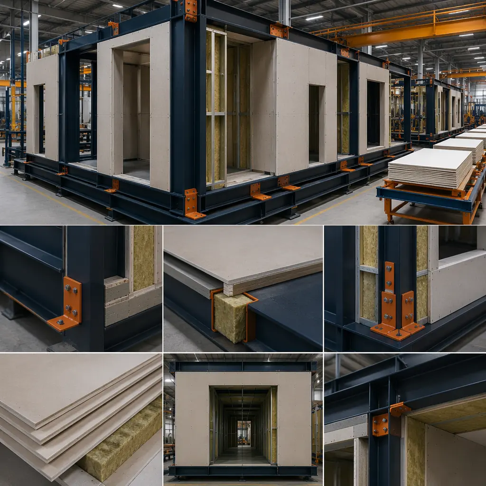
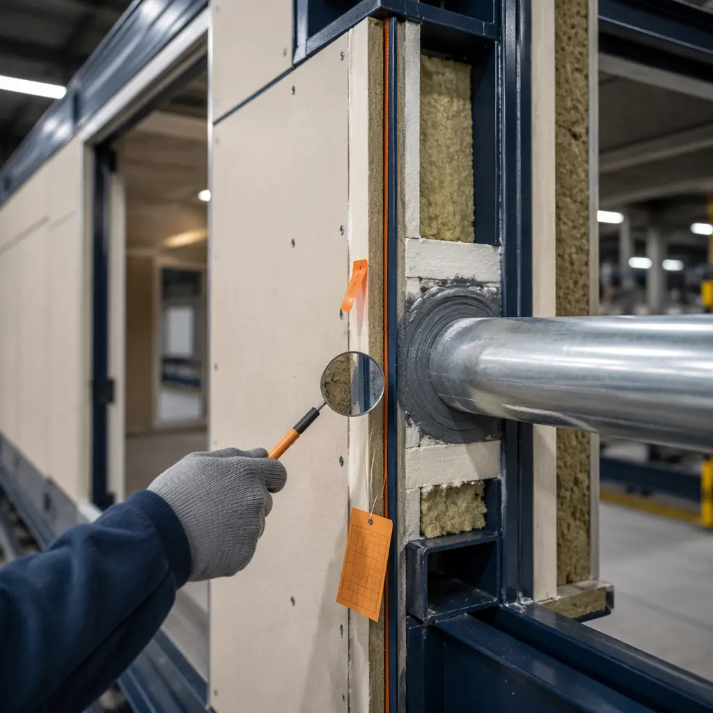
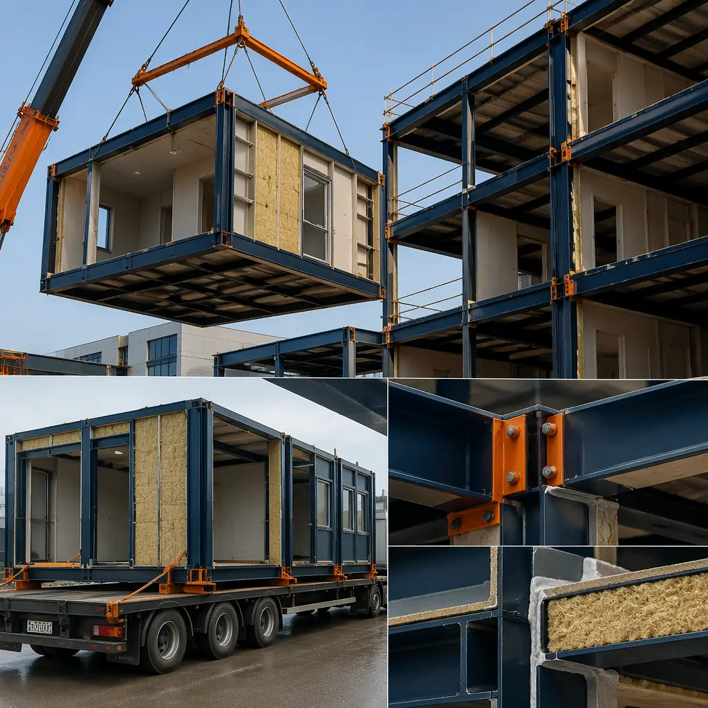

Fire safety is the regulatory threshold that every building must cross — and the one where modular construction's structural advantages are most frequently overlooked by developers. When a procurement officer or architect evaluates modular versus traditional construction, fire performance often gets reduced to a checkbox: "Does it meet code?" The better question — and the one that separates informed buyers from checkbox-tickers — is: "How does modular construction achieve fire resistance differently, and what does that difference mean for project cost, insurance premiums, and long-term liability?" The answer is embedded in the way factory-built modules are assembled, tested, and certified — not as individual components on a job site, but as complete assemblies under controlled conditions. This article examines the specific fire safety mechanisms of modular construction: how fire-rated assemblies are achieved at the module level, which codes govern modular fire performance, how passive fire protection is integrated by design, and what developers should verify before committing to a modular contract.

How Factory-Built Modules Achieve Fire Ratings — The Assembly-Level Advantage
In traditional construction, a fire-rated wall is assembled on site — studs are erected, gypsum board is hung in layers, joints are taped, penetrations are sealed. Every step depends on the skill and attention of the installer, the ambient conditions on installation day, and the coordination between the drywall contractor, the electrician who cuts holes for outlets, and the plumber who runs pipes through the assembly. A one-hour fire-rated wall designed on paper can lose 20–30% of its rated performance from field installation gaps alone — a 2mm unsealed gap around a pipe penetration can reduce the assembly's fire resistance by 15 minutes or more.
In modular construction, the fire-rated assembly is built on a jig, on a factory floor, by a team that repeats the same process hundreds of times per year. Every layer — the steel framing, the gypsum board or cement board panels, the fire-stopping around penetrations — is installed under quality control with documented inspection at each station. The module's walls, floor, and ceiling are constructed as complete fire-rated assemblies before they leave the factory. The module-to-module connection points — the joints where two modules meet — are designed with integrated fire-stopping: compressible intumescent gaskets, mineral wool fire safing, and overlapping gypsum layers that maintain the fire separation across the joint. These are not field-applied afterthoughts; they are engineered into the module design and installed as part of the factory assembly process.
The result is a fire-rated enclosure where every wall, floor, and ceiling assembly has been built to the same standard — not the variable standard of site conditions, weather, and multiple subcontractors. For a mid-rise modular building of 60–100 modules, this means 60–100 fire-rated enclosures that are essentially identical in their fire performance, with documentation to prove it. Traditional site-built construction cannot make that claim; its fire-rated assemblies are only as good as the last drywall crew on the last day of the job.

Fire-Rated Assemblies — What UL Certifications Mean for Modular Buildings
Fire-rated assemblies in North America are certified under standards set by UL (Underwriters Laboratories) or Intertek, with design numbers that specify exactly what combination of materials, framing, and installation method achieves a given fire-resistance rating. A UL U465 one-hour wall assembly, for example, specifies: 3-5/8" steel studs at 24" o.c., one layer of 5/8" Type X gypsum board on each side, with specific fastener spacing and joint treatment. If any parameter changes — a different stud gauge, a different screw pattern, a missing layer of joint compound — the UL certification no longer applies.
This is where modular construction's factory environment creates a structural compliance advantage. In a factory, the UL assembly specification becomes a production standard — the same stud gauge, the same gypsum board, the same fastener pattern, module after module, verified by third-party inspection at each step. On a construction site, the drywall contractor may substitute materials based on availability, or a framer may space studs at 24" instead of the specified 16" — and the deviation is discovered, if at all, only when the municipal inspector walks through days or weeks later.
The practical implications for a developer are significant. Consider a modular healthcare facility — hospitals and clinics operate under some of the strictest fire codes in the building industry, including NFPA 101 (Life Safety Code) requirements for two-hour fire-rated separation between occupancy types, smoke compartments limited to 22,500 sq ft, and horizontal exits with protected egress paths. Each of these requirements depends on fire-rated assemblies that perform as designed — not just on the day of the final inspection, but for the life of the building. Modular construction's assembly-level fire certification, with full documentation of every layer and component, provides a level of defensibility that a site-built project — with its patchwork of subcontractor work and incomplete inspection records — cannot easily match.
For modular hotels, where sleeping occupancy triggers additional fire safety requirements — including corridor fire ratings, smoke detection in every guest room, and self-closing fire doors — the module-level approach to fire-rated assemblies means that every guest room module arrives on site with its fire-rated walls, ceiling, and floor already installed and certified. The hotel developer does not need to trust that 200 individual guest room walls were fire-stopped correctly by 15 different drywall crews working across three floors; they receive a certification package for each module, with a documented chain of evidence from factory inspection to final assembly.
| Fire Rating | Typical Modular Assembly | Standard Application | Certification Basis |
|---|---|---|---|
| 1-hour | Steel studs + 1 layer Type X gypsum each side | Corridor walls, unit separation in residential | UL U465 or equivalent |
| 2-hour | Steel studs + 2 layers Type X gypsum each side | Floor-to-floor separation, shaft enclosures, occupancy separations | UL V497 or equivalent |
| 3-hour | Steel studs + 3+ layers gypsum, or concrete board options | High-hazard occupancy separation, exit stair enclosures | UL X528 or project-specific engineering judgment |
| Module joint | Intumescent gasket + mineral wool safing + gypsum overlap | All module-to-module connection planes | UL 2079 (joint systems) or ASTM E1966 |
Code Compliance — IBC, NFPA, and the Modular Certification Path
Modular buildings in the United States and most international jurisdictions are governed by the same building codes as site-built construction — the International Building Code (IBC), the International Residential Code (IRC) for one- and two-family dwellings, and the NFPA fire codes — but with an important structural distinction: the module construction phase is regulated under state industrial building codes or modular certification programs, while the on-site assembly phase is governed by local building codes. This dual jurisdiction can confuse developers who are encountering modular for the first time, but in practice it creates a more rigorous compliance pathway than site-built construction alone.
Under the IBC, modular buildings must meet all applicable fire safety provisions, including: Section 602 (construction type classification), Section 706 (fire walls), Section 707 (fire barriers), Section 708 (fire partitions), Section 713 (shaft enclosures), Chapter 9 (fire protection systems including sprinklers and alarms), and Chapter 10 (means of egress). For steel-framed modular construction — which constitutes the vast majority of commercial modular projects — the building typically classifies as Type IB or Type IIA construction (non-combustible), which permits greater height and area than wood-framed Type V construction and carries inherently lower fire risk due to the non-combustible primary structure.
Two additional standards are specific to modular construction and are worth understanding before engaging a modular manufacturer:
- ICC/MBI Standard 1200 and 1205. Published jointly by the International Code Council and the Modular Building Institute, these standards establish requirements for the off-site construction and inspection of commercial modular buildings. Standard 1205 covers the in-plant inspection process — it defines the qualifications for third-party inspection agencies, the required inspection stages (framing, rough-in, insulation, fire-resistant construction, and final), and the documentation that must accompany each module to the job site. When a developer contracts with a modular manufacturer operating under ICC/MBI 1205, they are hiring a fire safety compliance system, not just a construction method — every module arrives with a state-issued insignia or label confirming that the fire-rated assemblies were built and inspected to code.
- NFPA 101 Life Safety Code. This code governs fire protection features that are critical for specific occupancies — healthcare, educational, assembly, and residential. Modular buildings with these occupancies must demonstrate that their module-level fire-rated assemblies, corridor separations, smoke compartments, and egress paths meet NFPA 101 requirements. The key modular-specific consideration is the module-to-module fire separation at corridor walls and exit enclosures, which must maintain the full fire-resistance rating across the joint. Factory installation of intumescent gaskets and mineral wool safing at every mating surface — verified by the in-plant inspector before the module leaves the factory — provides a level of joint fire-stopping compliance that field-applied caulking and spray foam on a construction site cannot reliably match.
For developers building modular K-12 schools or senior living facilities — both of which face heightened fire safety scrutiny due to the vulnerability of their occupants — the documentation trail that comes with factory-built modules is not just a compliance convenience; it is a liability management tool. When a fire occurs in a school or care facility, the investigation will examine every wall assembly, every fire door, every penetration seal. Modular construction provides a documented answer: each assembly was built, inspected, and certified before it entered the building. Site-built construction provides, at best, intermittent municipal inspection reports — and at worst, nothing but the general contractor's word.
Fire safety in modular construction is not achieved by doing what site-built construction does, but in a factory. It is achieved by doing what site-built construction cannot do: building every fire-rated assembly to a documented, repeatable standard, with third-party verification at every step, and a certification trail that follows each module for the life of the building.
Passive Fire Protection — Compartmentalization by Design
Active fire protection — sprinklers, alarms, smoke control systems — responds to a fire after it starts. Passive fire protection — fire-rated walls, floors, doors, and penetration seals — contains a fire where it starts, preventing it from spreading to adjacent compartments. Building codes rely on both, but passive fire protection is the first line of defense and the one most affected by construction quality.
Modular construction provides passive fire protection through a mechanism that traditional construction cannot replicate: each module is, by its nature, a fire compartment. The module's six-sided steel frame (floor, ceiling, and four walls), when constructed with the appropriate fire-rated materials, forms a self-contained fire-resistant enclosure. When modules are stacked and connected on site, the building becomes an aggregation of fire compartments — each one capable of containing a fire for its rated period (one, two, or three hours) and preventing spread to adjacent modules.
This compartmentalization is not an added feature; it is inherent in the modular design. Every module requires floor, ceiling, and wall assemblies to function as a structural unit — those same assemblies, when built to fire-rated specifications, simultaneously serve as fire separations. In traditional construction, fire compartmentalization must be consciously designed into the floor plan and then executed by multiple trades. In modular construction, the compartmentalization is built into every module by default.
Consider the practical difference for a modular apartment building with 60 units across four floors. In traditional construction, the fire separation between Unit 301 and Unit 302 is a single wall — framed by one crew, drywalled by another, penetrated by an electrician and a plumber, and fire-stopped by a specialty contractor who may or may not be called back to seal every penetration. In modular construction, Units 301 and 302 arrive as separate factory-built modules, each with its own fire-rated walls already installed and inspected. The separation between the two units is not one wall — it is two independently fire-rated module walls, with an engineered joint system between them. The fire would need to breach two separate fire-rated assemblies and the joint fire-stopping to spread between units. This is passive fire protection that is structurally redundant — an outcome of the modular design itself, not an additional scope item.
Steel-Framed Modular vs Wood-Frame — The Fire Performance Gap
The single most consequential fire safety decision in a modular construction project is the choice of primary structural material. Steel-framed modular — the standard for commercial-scale modular construction — provides inherent fire resistance advantages over wood-framed modular or traditional wood-frame construction that compound across every aspect of the project.
Steel is non-combustible. It does not contribute fuel to a fire, does not burn through, and does not lose structural function as rapidly as wood when exposed to flame. At 1,000°F (538°C) — a typical fully-developed room fire temperature — structural steel retains approximately 50% of its room-temperature yield strength. Engineered wood products at the same temperature have effectively zero structural capacity — they are consumed by the fire. This is not a marginal difference; it is the distinction between a fire contained to one compartment and a fire that propagates through structural elements to adjacent spaces.
The IBC construction type classification translates this material difference into concrete regulatory flexibility. Type IIA steel-framed construction (non-combustible, one-hour protected) permits 4–5 stories and 37,500–57,000 sq ft per floor for most occupancy groups, depending on sprinkler protection. Type VA wood-framed construction (protected combustible) typically permits 3–4 stories and smaller floor areas. For developers who need the extra floor of rentable square footage or the larger floor plate for efficient unit layouts, the fire classification of steel-framed modular can be the factor that makes a project financially viable.
This fire performance advantage also translates to insurance — a topic we have explored in detail in our guide to modular construction insurance and risk management. Steel-framed modular buildings typically qualify for ISO Construction Class 3 (non-combustible) or Class 4 (masonry non-combustible), compared to Class 1 or 2 for wood-frame. This classification difference alone can reduce property insurance premiums by 15–25% annually — a recurring saving that compounds over the building's 30–50-year lifecycle.
| Fire Safety Factor | Steel-Framed Modular | Wood-Frame (Modular or Site-Built) |
|---|---|---|
| Primary structure combustibility | Non-combustible | Combustible — contributes fuel to fire |
| IBC Construction Type (no sprinklers) | Type IIA — up to 5 stories, 37,500–57,000 sq ft/floor | Type VA — up to 3 stories, 18,000–27,000 sq ft/floor |
| Fire propagation through structure | Structural steel does not propagate fire between compartments | Engineered wood can burn through and propagate fire |
| ISO Property Class | Class 3 (non-combustible) or Class 4 | Class 1 or 2 (frame / joisted masonry) |
| Property insurance premium impact | 15–25% lower vs Class 1/2 | Baseline (higher) |
| Module-level fire certification | Yes — each module inspected and labeled in factory | Partial — field inspection only |

What Developers Should Verify Before Signing a Modular Contract
Not all modular manufacturers build to the same fire safety standard. The factory environment does not automatically guarantee fire-rated compliance — it provides the conditions for compliance, but the developer must verify that the manufacturer actually delivers it. Here are the specific items to request and review before signing:
- Third-party inspection agency credentials. The manufacturer should operate under an approved third-party inspection program — typically a state modular program or an ICC/MBI 1205-compliant agency. Ask for the agency's name, accreditation, and the scope of their inspection protocol. If the manufacturer does their own quality control without third-party oversight, the fire-rated assemblies have no independent verification — which means they have no defensible certification trail.
- UL design numbers for all fire-rated assemblies. Every fire-rated wall, floor, ceiling, and joint assembly in the project should trace to a specific UL, Intertek, or equivalent design number. Ask for the design numbers and the corresponding assembly specifications. If the manufacturer uses "proprietary" assemblies without UL certification, request the engineering judgment letters that justify equivalency — and have your own structural engineer review them.
- Module-to-module joint fire test data. The joints between modules are the most critical fire safety detail in a modular building — and the one most likely to be overlooked in contract review. Request UL 2079 or ASTM E1966 fire test data for the specific joint system the manufacturer uses. Generic claims of "fire-stopped joints" are not sufficient; ask for the test report that demonstrates the joint system maintains the full fire-resistance rating of the adjacent wall assemblies.
- In-plant inspection documentation package. The manufacturer should provide — for every module — a documentation package that includes: framing inspection sign-off, fire-rated assembly inspection (confirming correct materials, layers, and fastener patterns), rough-in inspection (electrical/plumbing penetrations through fire-rated assemblies), and final inspection with the state insignia or label. This package is your evidence of fire safety compliance; retain it for the life of the building.
- Sprinkler system design for modular configuration. Modular buildings use sprinkler systems designed for the module layout — typically with risers that run through designated module chases and branch lines that connect at module joints. Verify that the sprinkler contractor has designed the system for the module dimensions and that the sprinkler coverage accounts for the double-wall condition at module joints, which can create dead spaces that standard sprinkler layouts do not address.
For developers considering modular versus traditional construction, the fire safety verification process is not an additional burden — it is a structural advantage. In traditional construction, these same verifications must happen site by site, wall by wall, inspection by inspection, with results that vary from project to project. In modular construction, the verification happens once — at the factory level — and the certification applies to every module produced under that program. The developer who signs a modular contract with a manufacturer that provides the five items above has a fire safety assurance that no site-built project can match: documented, repeatable, third-party-verified fire-rated assemblies in every module.
The Insurance Connection — Fire Ratings and Premiums
Fire safety and insurance cost are two sides of the same actuarial coin. The construction type classification — determined by the primary structural material and the fire-rated assembly specifications — is the single largest factor in commercial property insurance pricing after location and occupancy. A building classified as ISO Class 3 (non-combustible, steel-framed) pays 15–25% less in annual property insurance premiums than an otherwise identical building classified as ISO Class 1 (frame/combustible), holding location and use constant.
For a $15 million, 60,000 sq ft modular office or apartment building, this classification difference translates to approximately $6,000–$12,000 in annual premium savings — not a one-time reduction, but a recurring benefit for every year the building is insured. Over a 30-year holding period, the cumulative fire-safety-driven insurance savings alone can reach $200,000–$350,000 in present-value terms — before accounting for the reduced risk of fire-related business interruption, lower deductibles, and the stronger subrogation position that modular construction's documentation trail provides.
The developer who understands this connection between factory-level fire safety and long-term insurance cost is in a stronger negotiating position with both their modular manufacturer and their insurance broker. To the manufacturer: provide the fire-rated assembly certifications, the in-plant inspection records, and the module labeling documentation — because those documents directly reduce the owner's insurance cost. To the broker: present the modular building as ISO Class 3 steel-framed construction with UL-certified fire-rated assemblies and third-party in-plant inspection — not as "prefabricated construction" filed under a generic category that forfeits the classification advantage.
The fire safety of modular construction is not a theoretical argument; it is a function of how the building is made. Factory production provides the controlled conditions for building fire-rated assemblies to documented, repeatable standards. Steel framing provides non-combustible structural elements that do not contribute fuel or propagate fire between compartments. Third-party inspection at every production stage provides a certification trail that site-built construction cannot produce. And the module-level compartmentalization — an inherent feature of the modular design — provides passive fire protection that is structurally redundant, not reliant on a single trade's field work. For the developer evaluating modular construction, fire safety is not a risk to be managed; it is an advantage to be documented, presented to the insurer, and priced into the project's long-term financial model.